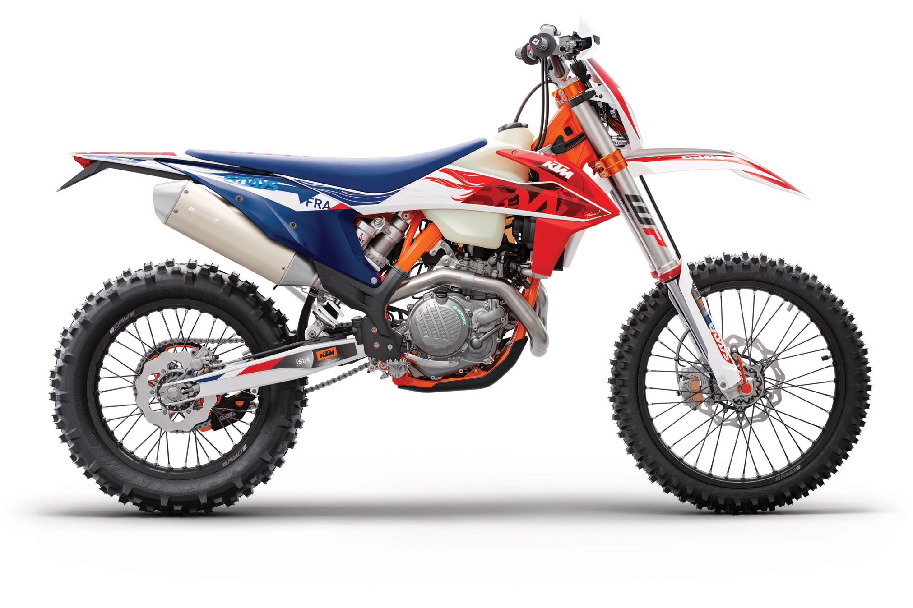

Моё хобби эндуро

Энду́ро (англ. enduro от лат. indurare — вынести, выдержать, вытерпеть) — дисциплина мотоспорта и велоспорта и класс мотоцикла, предполагающая агрессивный стиль езды по бездорожью и на специализированных спортивных трассах, начиненных бревнами, валунами и другими препятствиями, в зависимости от сложности соревнований. Для этой дисциплины используют соответствующую спортивную мотоциклетную (велосипедную) технику. Помимо соревнования на регулярность движения, в эндуро включено выполнение в кратчайшее время условий дополнительных соревнований.
Если говорить в глобальном смысле, то езда по бездорожью в режиме приключений появилась практически одновременно с созданием мотоциклов как вида техники. Первый Daimler Reitwagen был запатентован в 1885 году, в 1894 начали выпуск Hildebrand & Wolfmüller, а вместе с ними двухколёсные «автомобили для верховой езды» начали производить по всему миру. Лидерами отрасли практически сразу стали французские и английские инженеры, которые сделали новый вид техники надёжным и достаточно бюджетным для массового потребителя. Тут-то всё и началось.
Массовые активности на оффроуде не заставили себя долго ждать: в начале прошлого века были организованы заезды под названием «Scrambles». Владельцы мотоциклов фактически сделали кальку со любительских автомобильных гонок, где нужно было преодолеть трассу на скорость. Так как трек (если его так можно назвать) готовился силами участников, это чаще всего было расчищенная сельская дорога или участок на поле, где покрышками обозначалось направление. Маршрут нередко размывало дождями, поэтому преодоление трассы требовало от райдеров не только навыков вождения, но и выносливости — как раз тот самый элемент l'endurance, который и лежит в основе направления эндуро.
Затем, в 1913 году, в городе Карлайл (Англия) состоялась масштабная гонка на выносливость под названием International Six Day Trial. В заездах приняли участие самые разные виды транспорта: и автомобили, и веломобили, и мотоциклы (в том числе с колясками). Организацией занимались на самом высоком уровне, а регламенты для соревнований были прописаны экспертами FICM (Международной ассоциации мотоциклистов, которая была основана в декабре 1904 года). В общем, работа по подготовке была проделана колоссальная, мероприятие произвело фурор, а по результатам заездов было принято решение сделать их ежегодными. Собственно, с тех пор (за исключением периодов Первой и Второй мировых войн) оно является регулярным — и с 1981 известно под названием International Six Days Enduro.